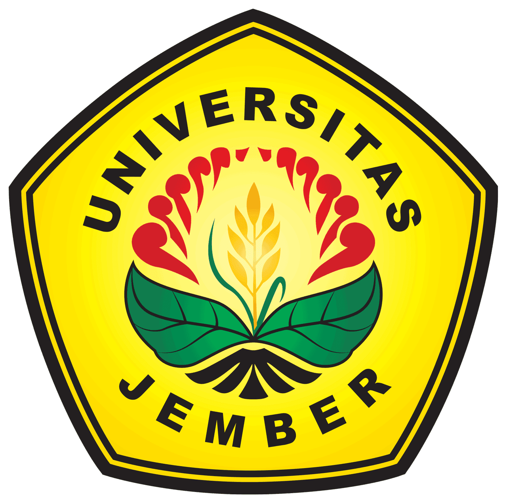

Pada kesempatan kali ini mata kuliah etika profesi membahas tentang "Etika Bisnis Bidang E-Commerce" yang berlangsung di Universitas Jember, Mata Kuliah ini sangat bermanfaat bagi saya, karena dapat meningkatkan dan melatih rasa tanggung jawab dalam setiap perbuatan yang saya lakukan.
Etika Bisnis Bidang E-Commerce
31 Oktober 2023
Pengertian Bisnis
image by : storyset.com
Kata “bisnis” berasal dari bahasa Inggris, yaitu business, sedangkan kata business itu sendiri berasal dari pengembangan kata busy yang berarti sibuk. “Sibuk” yang dimaksud dalam hal ini bisa terjadi pada individu, komunitas, atau masyarakat. Bisnis merupakan kegiatan yang dilakukan oleh seseorang atau sekelompok orang untuk menjual barang atau jasa denga tujuan untuk mendapatkan keuntungan.
Pengertian Etika Bisnis
Etika bisnis adalah salah satu bentuk etika profesi yang mengatur etika dalam melakukan bisnis. Etika bisnis berlaku untuk semua aspek dalam bisnis mulai dari aspek produksi,distribusi, pemasaran, penjualan, dan konsumsi barang dan jasa. Etika bisnis dapat berasal dari individu, aturan organisasi, ataupun system hukum yang ada.
Pentingnya Etika Bisnis
-
Selain mempertaruhkan barang dan uang untuk tujuan keuntungan, bisnis juga mempertaruhkan nama, harga diri, bahkan nasib manusia yang terlibat.
-
Bisnis merupakan bagian penting dalam masyarakat sehingga perlu menerapkan etika dalam pelaksanaannya
-
Etika bisnis merupakan pedoman bagi para pelaku bisnis
-
Memahami etika bisnis memberi pelajaran bahwa bisnis yang berhasil tidak hanya bisnis yang mendapat keuntungan semata, melainkan bisnis yang etis dan memelihara hubungan yang baik antar manusia yang terlibat
Prinsip-Prinsip Etika Bisnis
- Prinsip Otonomi
- Prinsip Kejujuran
- Prinsip Keadilan
- Prinsip Saling Mengutungkan
- Prinsip Integritas Moral
kemampuan mengambil keputusan dan bertindak berdasarkan kesadaran tentang apa yang baik untuk dilakukan dan bertanggung jawa secara moral atas keputusan yang diambil.
Prinsip ini menjadi dasar penting yang perlu dipatuhi seluruh pelaku bisnis. Prinsip Kejujuran menanamkan sifat berdasarkan fakta, situasi dan kondisi yang sebenarnya. Degan diterapkannya prinsip ini akan tercipta kepatuhan terhadap perturan, kontrak atau komitmen para pelaku bisnis.
Prinsip keadlian menanamkan sifat untuk tidak memandang rendah pihak lain, sehingga setiap pelaku bisnis mendapat perlakuan yang sesuai dengan haknya masing-masing dengan demikian tidak aka nada pihak yang merasa dirugikan.
Prinsip saling menguntugnkan menanamkan kesadaran untuk saling memberikan keuntungan satu sama lain, agar semua pihak saling mendapatkan keuntungan , demikian pula untuk berbisnis yang kompetitif.
Prinsip integritas moral merupakan sikap yang tidak merugikan orang lain dalam mengambil keoutusan dan tindakan, sehingga kepercayaan saling terjaga satu sama lain.
Pengertian E-Commerce
image by : storyset.com
E-Commerce merupakan kegiatan transaksi jual beli yang dilakukan berbasis online dengan menggunakan media elektronik. Melalui e-commerce produk dapat diiklankan, dijual, dan dibayarkan secara elektronik. Kelebihan terbesar dari e-Commerce adalah kemampuan untuk menyediakan transaksi belanja yang aman melalui internet dan hampir secara instan verifikasi dan validasi transaksi kartu kredit.
Benefit dari E-Commerce
- Akses terhadap pasar global
- Penjualan langsung tanpa melalui perantara/pihak ketiga
- Usaha kecil dapat bersaing dengan perusahaan besar
- Dapat melakukan jual beli kapan saja
- Mengurangi biaya pemasaran produk secara konvensional
- Keamanan transaksi, verifikasi otomatis, keamanan situs
Etika Dalam E-Commerce
-
Semua situs perdagangan online harus terdaftar, tak bisa melakukan aktivitas jual-beli online secara bebas. Pelaku bisnis online juga harus mendeklarasikan etika bisnis yang dimiliki
-
Pelaku bisnis online juga harus menyusun data dan bukti transaksi dengan benar. Data transaksi ini nantinya bisa digunakan sebagai alat bukti dan memiliki kekuatan hukum
-
Lantaran perdagangan online bersifat global, Kementerian membolehkan pihak yang mengalami sengketa perdagangan untuk memilih kaidah hukum perdagangan internasional
-
Meski transaksi bersifat digital, kontrak harus tetap memasukkan identitas, spesifikasi barang, legalitas barang, nilai transaksi, dll. Situs e-commerce wajib membuat kontrak online dalam Bahasa Indonesia.
-
Situs perdagangan online juga harus memiliki trustmark. Dengan adanya trustmark internasional, konsumen akan merasa lebih aman saat berbelanja di situs tersebut.
-
Kementerian akan menerbitkan daftar hitam (blacklist) bagi situs perdagangan online yang melanggar aturan berdasarkan laporan yang masuk ke Kementerian Perdagangan.
My University
Universitas Jember adalah institusi pendidikan tinggi yang telah mengikrarkan diri sebagai Kampus Kebangsaan dan Kampus Pancasila.
My Profile

Namaku Mukhamad Alyasyi Thobiq dengan NIM 232410102074. Aku dari Fakultas Ilmu Komputer Program Studi Teknologi Informasi